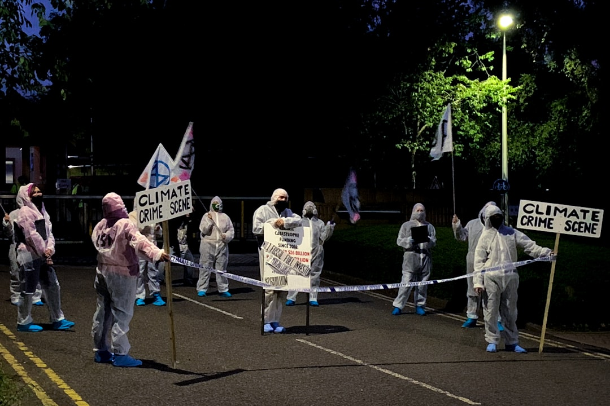

### The Truth is Out There: UFO Disclosure and the Government's Deceptive Dance
### The Truth is Out There: UFO Disclosure and the Government's Deceptive Dance As we sit on the precipice of a technological era, crammed with cameras, surveillance drones, and an overwhelming amount of data at our fingertips, one might think that the era of misinformation is drawing to a close. Yet, here we are, drowning in contradictions and veiled truths about unidentified flying objects (UFOs). Why, in 2023, is the U.S. government still tiptoeing around UFO disclosure, and what does it have to gain from keeping the populace muzzled? Spoiler alert: the answer is a potent mix of power, control, and the deep-seated need to maintain the status quo. In June 2021, a report from the Office of the Director of National Intelligence (ODNI) delivered a modest dose of truth that sent conspiracy theorists and truth-seekers into a frenzy. The report acknowledged 144 instances of unexplained aerial phenomena (UAP); however, it concluded that these “unidentifiable” entities didn't necessarily point to extraterrestrial origins. Instead, the report cautiously attributed them to possible "technologies developed by foreign adversaries," an enigmatic declaration that leaves the door wide open for more secrets. If this sounds like a classic deflection tactic to you, you’re not alone! Up until now, we’ve been left with table scraps when it comes to genuine transparency. The U.S. government receives our tax dollars but seems unwilling to share intact knowledge about the skies above us. Instead, they dive down the rabbit hole of speculation, invoking foreign threats while conveniently ignoring the possibility that we could be grappling with something much more profound. The institutions tasked with unveiling the truth are instead draped in existential fear and paternalistic surveillance. It’s almost as if they’re saying, “Trust us; we’ll tell you when you’re ready.” Just let that sink in for a moment. And let’s not forget the heavy implication of obfuscation. An age-old practice, cloaking significant societal advances from the masses can keep a rigid structure of power intact. The secrecy surrounding UFOs should not be seen merely as a quirky quirk of government; it’s a calculated approach to maintain control over narrative and perception. They want you focused on the mundane—the chaos of inflation, the divisive political landscape—rather than considering the larger questions of existence, our place in the universe, and our right to know what’s happening beyond the limits of our world. Here’s a bold claim: the realist answer could be staring us right in the face, and it’s a straight-up invasion of privacy on a galactic scale. The UFO paradox doesn’t just stop at governmental deeds; it’s echoed in the realm of corporate interests, too. The private sector is not immune from the gravitational pull of secrecy. Lockheed Martin, Boeing, and other military-industrial complex giants have invested heavily in research and development related to UAP. Their profit margins are inflating like hot air balloons. Yet what public accountability exists for these mammoth entities? Their shareholder interests loom larger than the truth, feeding on the perpetual cycle of unaccountability reinforced by dubious government claims. Let’s talk about the fact that the media has largely followed the governmental lead in minimizing the UFO discourse. Journalistic integrity should ideally prioritize truth over entertainment; however, too often it’s the shiny lights of clickbait sensationalism that take the center stage. Do you remember when “aliens” became a joke, a meme? The dismantling of legitimate inquiry into extraterrestrial existence has been overshadowed by a culture that trivializes serious concerns about our own power dynamics. We’re encouraged to laugh it off, to dismiss it, so we won't challenge the underlying structures that insist it’s all just nonsense. So, why should we care? The dismissive attitude surrounding UFOs may seem laughable to some, but engaging with this dialogue expands our understanding of what contributes to systemic ignorance. The mere acknowledgment of unidentified aerial phenomena forces us to confront our inherent fears of the unknown. It should compel us to question why such information would be withheld and who benefits from such barriers to enlightenment. If history tells us anything, it’s that the people have the power, especially in a democratic society. We have a right to demand transparency, which could very well come
Updated 2025-08-03 07:42 UTC